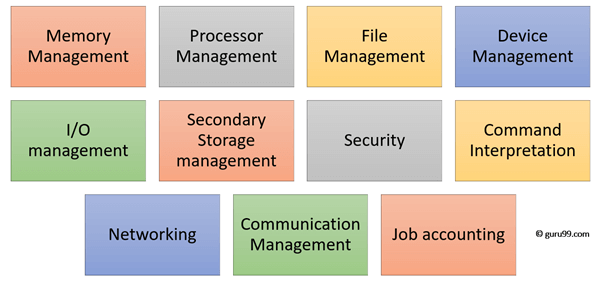

Operating Systems
Functions of an Operating System
In an operating system software performs each of the function:
- Process management:- Process management helps OS to create and delete processes. It also provides mechanisms for synchronization and communication among processes.
- Memory management:- Memory management module performs the task of allocation and de-allocation of memory space to programs in need of this resources.
- File management:- It manages all the file-related activities such as organization storage, retrieval, naming, sharing, and protection of files.
- Device Management: Device management keeps tracks of all devices. This module also responsible for this task is known as the I/O controller. It also performs the task of allocation and de-allocation of the devices.
- I/O System Management: One of the main objects of any OS is to hide the peculiarities of that hardware devices from the user.
- Secondary-Storage Management: Systems have several levels of storage which includes primary storage, secondary storage, and cache storage. Instructions and data must be stored in primary storage or cache so that a running program can reference it.
- Security:- Security module protects the data and information of a computer system against malware threat and authorized access.
- Command interpretation: This module is interpreting commands given by the and acting system resources to process that commands.
- Networking: A distributed system is a group of processors which do not share memory, hardware devices, or a clock. The processors communicate with one another through the network.
- Job accounting: Keeping track of time & resource used by various job and users.
- Communication management: Coordination and assignment of compilers, interpreters, and another software resource of the various users of the computer systems.
